Laporan Praktikum 1
Instalasi & Konfigurasi Laravel
Laravel 13 · Local Development dengan Laragon · Implementasi Pola MVC
Tujuan & Dasar Teori
Setelah menyelesaikan praktikum ini, mahasiswa diharapkan mampu:
- Melakukan instalasi Laragon sebagai local server environment.
- Melakukan instalasi Laravel dan tools pendukungnya (Composer, Node.js, Git, NPM).
- Mengonfigurasi environment development Laravel.
- Memahami struktur dasar proyek Laravel dan konsep arsitektur MVC.
- Menjalankan aplikasi Laravel melalui browser.
- Membuat proyek baru Laravel dan mengimplementasikan pola MVC secara sederhana.
Laravel adalah framework PHP open source yang dikembangkan oleh Taylor Otwell. Framework ini dirancang dengan arsitektur MVC (Model–View–Controller) untuk mempermudah dan mempercepat pengembangan aplikasi web yang modern dan terstruktur.
Beberapa fitur unggulan Laravel antara lain: Eloquent ORM untuk interaksi database yang intuitif, Blade Templating Engine untuk pembuatan tampilan dinamis, Artisan CLI untuk otomasi tugas development, serta sistem Routing dan Middleware yang fleksibel.
Laragon merupakan local development environment untuk Windows yang ringan dan mudah digunakan. Laragon sudah menyertakan Apache/Nginx, PHP, MySQL, dan berbagai tools lainnya dalam satu paket, sehingga mempercepat proses setup environment Laravel tanpa konfigurasi manual yang rumit.
Alat & Bahan
| No | Komponen | Keterangan |
|---|---|---|
| 1 | Laptop / Komputer | Sistem Operasi Windows 10/11 |
| 2 | Laragon Full | Local server environment (Apache, PHP, MySQL) |
| 3 | Visual Studio Code | Editor kode sumber |
| 4 | Browser | Google Chrome atau Mozilla Firefox |
| 5 | Composer | Dependency manager untuk PHP |
| 6 | Node.js & NPM | Runtime JavaScript dan package manager |
| 7 | Git | Version control system |
| 8 | Koneksi Internet | Untuk mengunduh package dan dependency |
Langkah Kerja Praktikum
Langkah pertama adalah mengunduh Laragon Full dari situs resminya. Laragon Full sudah mencakup PHP, Apache, MySQL, dan berbagai tools yang dibutuhkan untuk development Laravel.
Buka browser, ketik "download laragon" di Google, lalu klik hasil pencarian menuju situs resmi laragon.net.
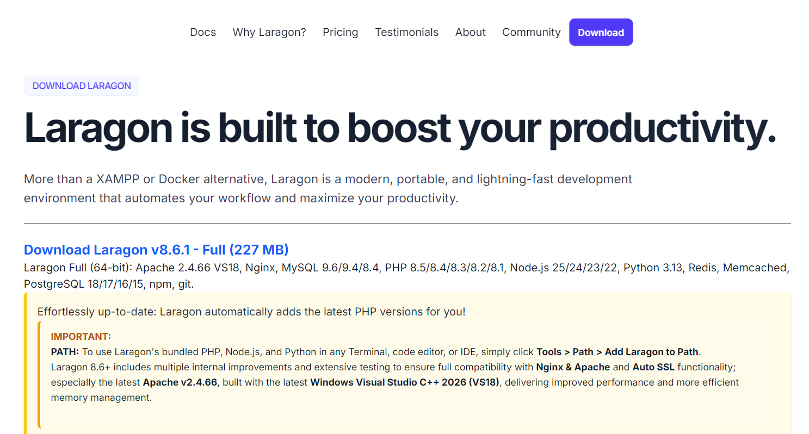
Setelah masuk ke situs laragon.net, pilih versi Laragon Full yang mencakup semua komponen yang dibutuhkan, lalu klik tombol download.
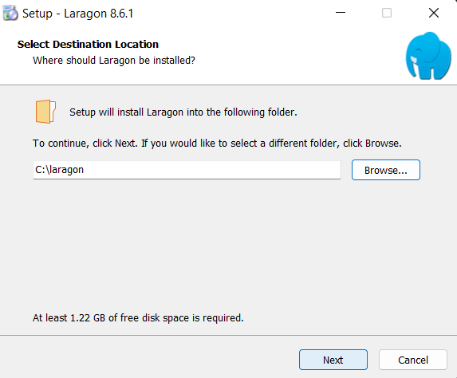
Tunggu proses unduh file installer Laragon selesai. Ukuran file Laragon Full sekitar 170–200 MB tergantung versi.

Buka file installer yang sudah diunduh, ikuti langkah-langkah wizard instalasi. Pilih direktori instalasi (default: C:\laragon), lalu klik Install.
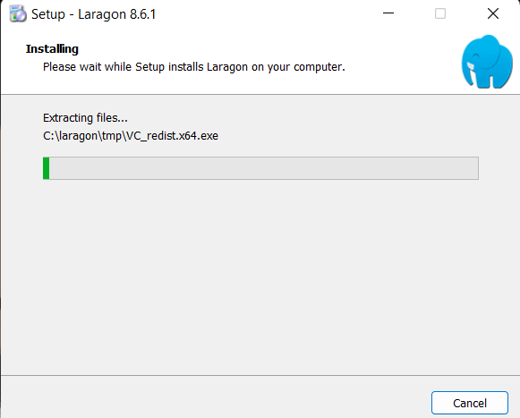
Setelah instalasi selesai, buka Laragon dan klik tombol "Start All" untuk menjalankan semua service (Apache dan MySQL). Pastikan indikator status berwarna hijau.
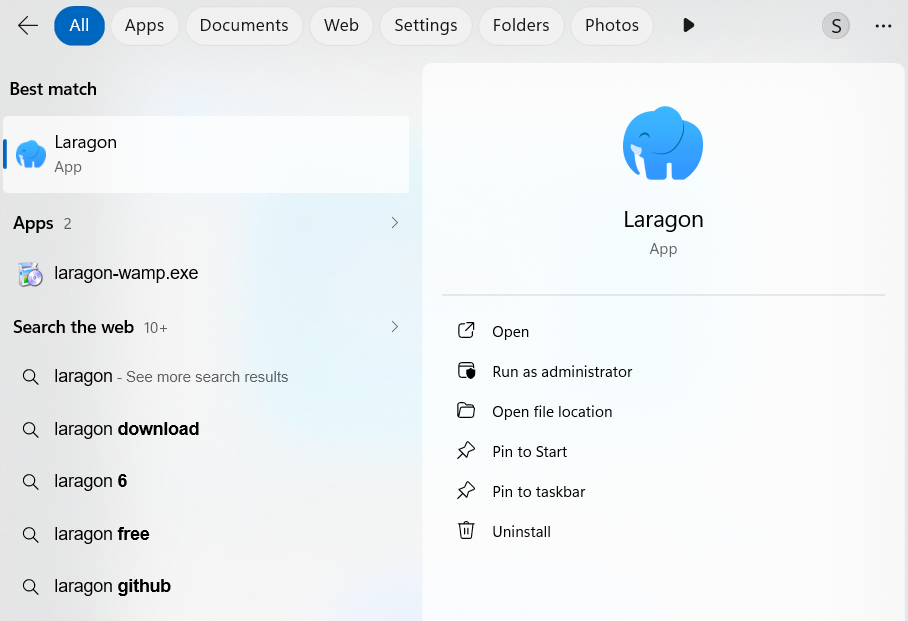
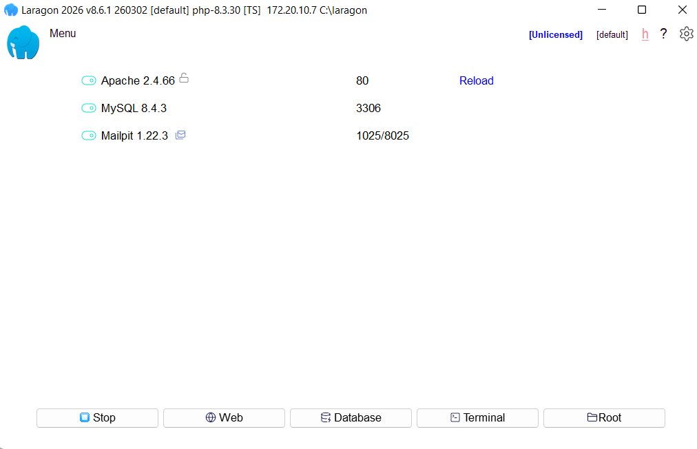
Laragon Full sudah menyertakan PHP, Composer, Node.js, dan NPM secara otomatis. Verifikasi semua tools sudah terinstal dengan benar menggunakan terminal Laragon (klik kanan ikon Laragon di system tray → Terminal).
# Cek versi Composer
composer --version
# Cek versi Git
git --version
# Cek versi Node.js
node --version
# Cek versi NPM
npm --versionApabila semua perintah menampilkan nomor versi tanpa error, berarti semua tools siap digunakan.
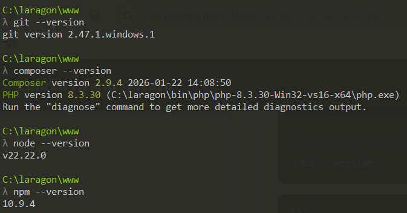
Terdapat dua cara membuat proyek Laravel: menggunakan Laravel Installer atau Composer. Pada praktikum ini digunakan Composer karena lebih umum dan tidak memerlukan instalasi tambahan.
Buka terminal Laragon, lalu jalankan perintah berikut:
# Buat proyek Laravel 13
composer create-project laravel/laravel laravel --prefer-distProses ini akan mengunduh semua dependency Laravel dan membutuhkan beberapa menit tergantung kecepatan internet.
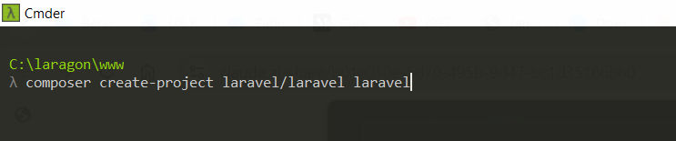
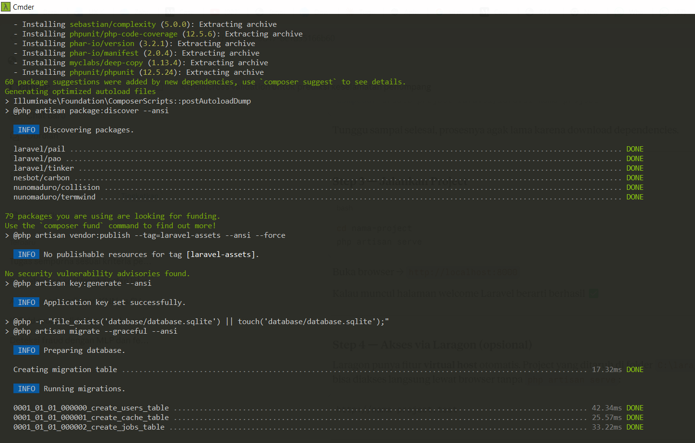
Setelah proyek berhasil dibuat, masuk ke direktori proyek dan jalankan server development bawaan Laravel menggunakan Artisan CLI.
# Masuk ke direktori proyek
cd laravel
# Jalankan server development Laravel
php artisan serve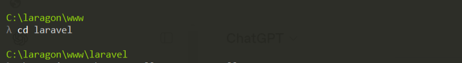
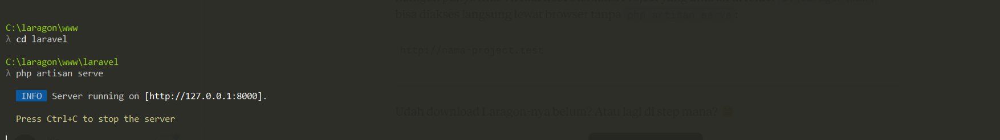
Buka browser dan akses http://localhost:8000. Apabila halaman welcome Laravel berhasil ditampilkan, maka instalasi telah berhasil.
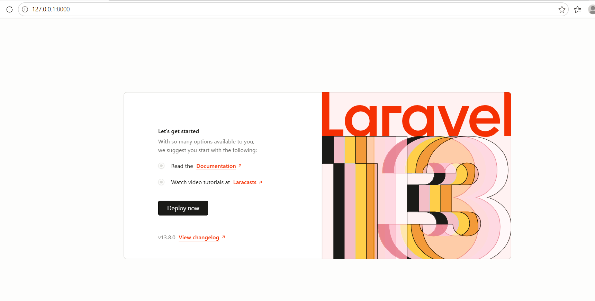
Bagian ini merupakan tantangan praktikum: mengimplementasikan pola MVC secara sederhana dengan membuat halaman pengguna menggunakan Controller, View, dan Routing Laravel.
-
Membuat Controller "UserController"
Jalankan perintah Artisan berikut di terminal untuk membuat controller baru secara otomatis:
bashphp artisan make:controller UserController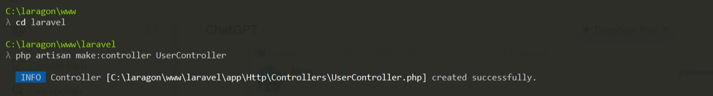
Gambar 5.1 — Pembuatan UserController berhasil -
Menambahkan Method
index()pada UserControllerBuka file
app/Http/Controllers/UserController.phpdi VS Code, lalu tambahkan methodindex()yang akan mengirimkan data ke view.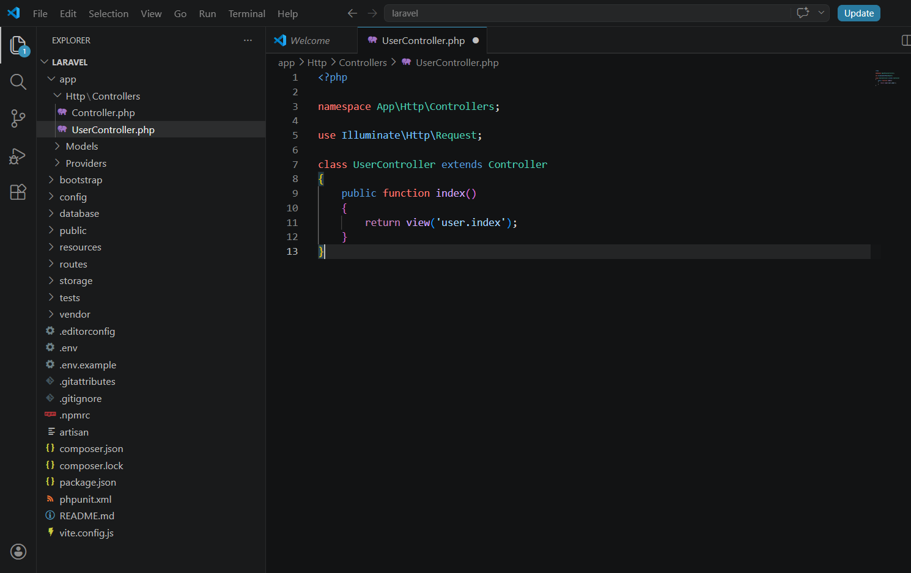
Gambar 5.2 — Method index() pada UserController -
Membuat View
resources/views/user/index.blade.phpBuat folder
userdi dalamresources/views/, kemudian buat fileindex.blade.phpdengan tampilan HTML sederhana.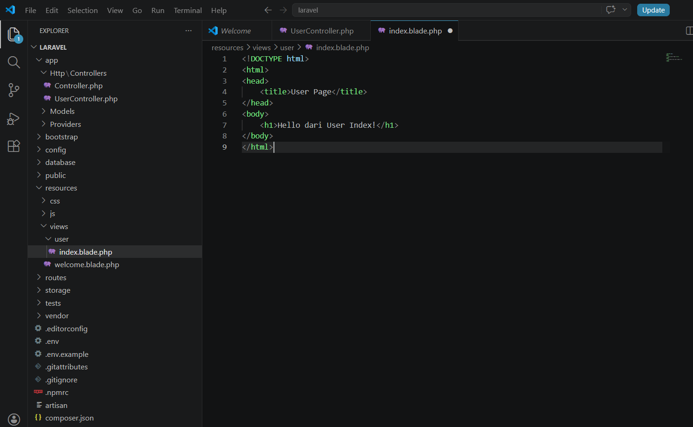
Gambar 5.3 — Isi file index.blade.php untuk tampilan User -
Mendaftarkan Route di
routes/web.phpBuka file
routes/web.phpdan tambahkan route untuk URL/useryang diarahkan keUserController@index.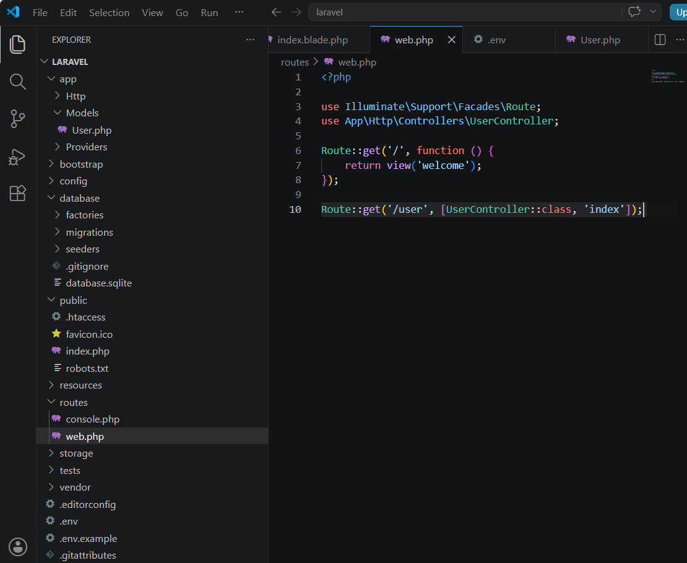
Gambar 5.4 — Route /user didaftarkan di routes/web.php -
Mengakses Route di Browser
Pastikan server masih berjalan (
php artisan serve), lalu buka browser dan akses http://127.0.0.1:8000/user. Halaman akan menampilkan teks "Hello dari User Index!" sebagai bukti bahwa alur MVC berhasil diimplementasikan.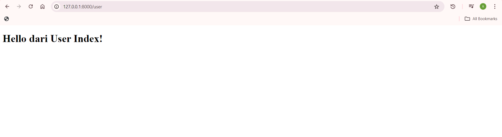
Gambar 5.5 — Halaman /user menampilkan "Hello dari User Index!" di browser
Hasil & Kesimpulan
| No | Kegiatan | Hasil | Status |
|---|---|---|---|
| 1 | Instalasi Laragon | Apache, PHP, MySQL berjalan normal | Berhasil |
| 2 | Instalasi Laravel 13 | Semua dependency terunduh via Composer | Berhasil |
| 3 | Pembuatan Proyek | Struktur folder MVC terbentuk | Berhasil |
| 4 | Server Development | Berjalan pada localhost:8000 |
Berhasil |
| 5 | Implementasi MVC | Controller, View, dan Route berfungsi sesuai harapan | Berhasil |
- Laragon menyediakan environment siap pakai tanpa konfigurasi manual, sehingga mempercepat proses setup.
- Laravel 13 berhasil dikonfigurasi dengan seluruh dependency terpenuhi melalui Composer.
- Arsitektur MVC memisahkan logika bisnis, tampilan, dan data secara terstruktur sehingga kode lebih mudah dipelihara.
- Server development Laravel berjalan optimal pada
localhost:8000tanpa kendala. - Implementasi Routing, Controller, dan View terbukti berjalan sesuai dengan alur MVC yang diharapkan.